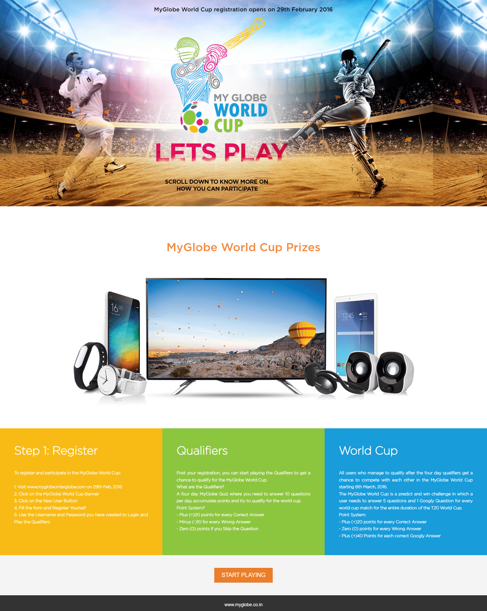
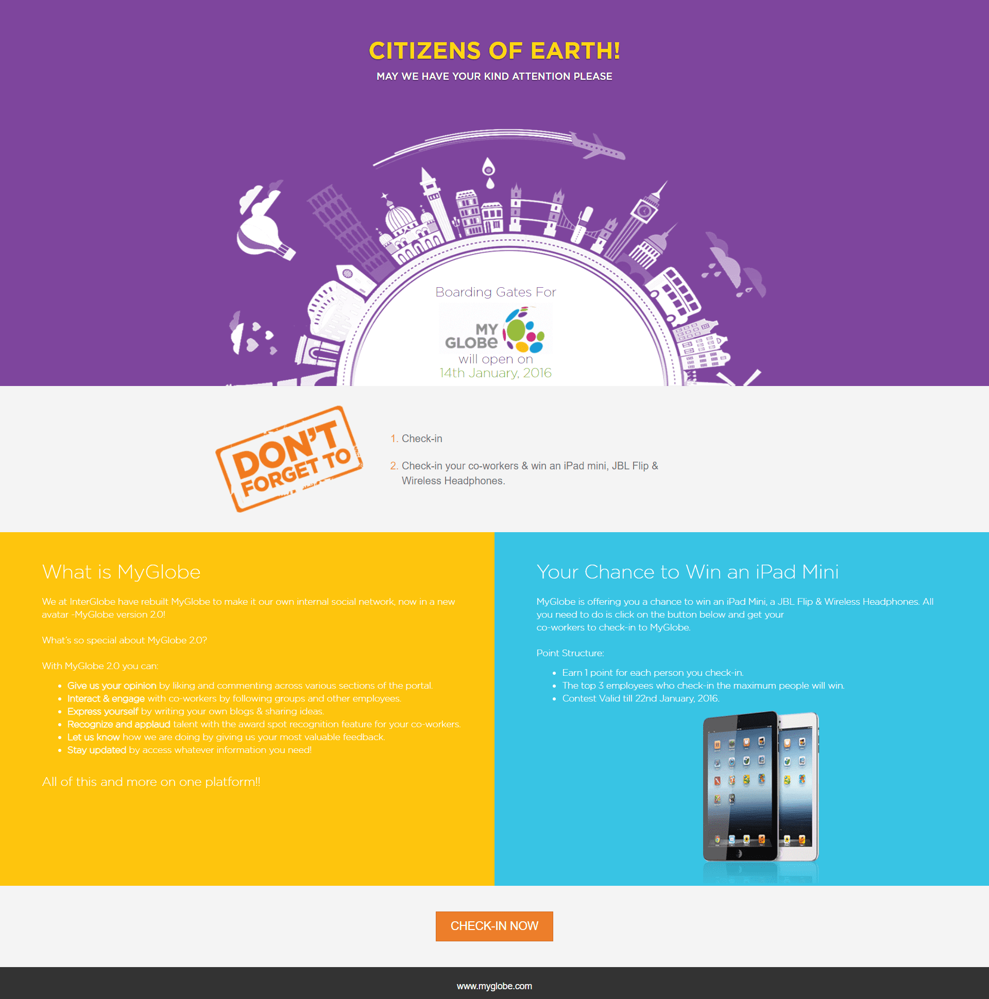
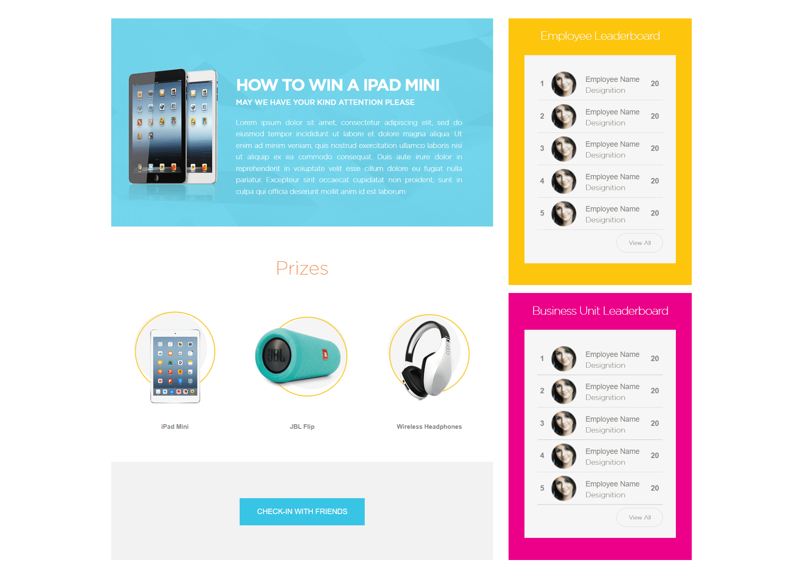

Participation depended on employees actively entering the intranet rather than encountering the campaign in a public feed.
← Back to workThe World Cup outside.
InterGlobe · Employee Engagement Campaign
The World Cup outside.
A company-wide game inside.
Project overview
Match-day excitement.
Designed for employee connection.
The 2016 ICC World Twenty20 brought the tournament to India and created a high-energy cultural moment around cricket.
InterGlobe used that momentum to activate employees through MyGlobe: an intranet contest combining registration, qualifiers, match predictions, bonus questions, prizes and live leaderboards.
- Moment
- World T20 2016
- Audience
- Employees
- Experience
- Quiz + Predictions
- Motivation
- Prizes + Leaderboards
The challenge
Make employees log in.
Give them a reason to return.
The idea needed more than a one-time prize draw; it had to stay relevant throughout a multi-week tournament.
The game architecture
Qualify first.
Predict every match.
A phased structure created an early participation milestone, then converted qualified employees into repeat players for the duration of the tournament.
- 01
Register
Employees create their contest access through MyGlobe.
- 02
Qualify
Four days of cricket questions build points and unlock the main game.
- 03
Predict
Five match questions and one bonus “Googly” keep every fixture active.
- 04
Compete
Individual and business-unit leaderboards make progress visible.
The contest experience
One intranet destination.
An entire tournament to play.
The landing page combined the campaign promise, prize motivation and participation mechanics in a single scannable journey.

The internal platform
Participation built
on connection.
MyGlobe already brought employees together through content, groups, ideas and recognition. Campaign mechanics extended that behaviour through colleague check-ins, team pride and visible competition.
- Employee and business-unit leaderboards
- Recognition through visible rankings
- Intranet-native registration and play
- Prizes that sustained motivation


The engagement loops
Fresh stakes.
Every match day.
Qualifying questions rewarded cricket familiarity.
Upcoming fixtures created a natural reason to return.
Leaderboards made individual and team momentum visible.
Technology prizes gave participation a tangible payoff.
The outcome
An intranet campaign.
With tournament-scale energy.
The experience turned the cricket calendar into a repeat engagement engine, connecting employees through knowledge, prediction, competition and recognition.
Repeat participation
Match-based questions created recurring reasons to return.
Visible momentum
Leaderboards sustained competition throughout the campaign.
Internal connection
Individual play and business-unit pride lived in one experience.
Every fixture created a question.Every answer created connection.
Have a workforce worth activating?